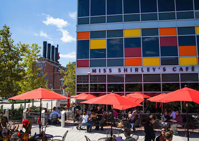
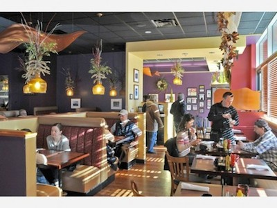

Miss Shirley’s Cafe
  750 E Pratt St, Baltimore, MD 21202 (410) 528-5373Miss Shirley’s Cafe offers our guests an exceptional award winning culinary experience for breakfast, brunch and lunch. Our specialties are rooted in Southern fundamentals and the abundance of fresh ingredients from the Chesapeake Bay region of Maryland. We pride ourselves in beautifully presented plates, prompt and professional service, as well as clean, comfortable and well-maintained premises for our guests.
Established in 2005 by restaurateur and Baltimore native Eddie Dopkin, Miss Shirley’s Café was created as a tribute to an inspirational employee and personal friend, Miss Shirley McDowell. McDowell, a food professional at The Classic Catering People, was known for her sassy charm and sheer joy of preparing dishes for those she loved. Corporate Executive Chef Brigitte Bledsoe has crafted a bold menu that reflects both McDowell’s southern flare with Bledsoe’s love of fresh Maryland ingredients.
Beginning as a small 42 seat café in Roland Park, Miss Shirley’s Café has become a passion for the Dopkin family, including son and partner David Dopkin, who has helped nurture and grow Miss Shirley’s Café throughout it’s relocation to 513 W. Cold Spring Lane, expansion, and into it’s two other locations in downtown Baltimore and Annapolis.
As a family-friendly, upscale-casual restaurant, Miss Shirley’s Café’s décor evokes an energetic and welcoming atmosphere. Noted for beautiful presentation, exceptional service, and award-winning dishes, Miss Shirley’s Café has grown into a Baltimore landmark sought out by both locals and visitors alike.